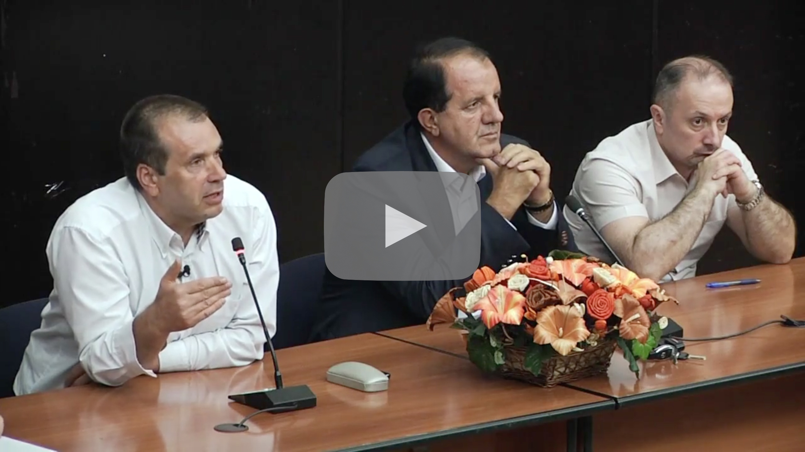
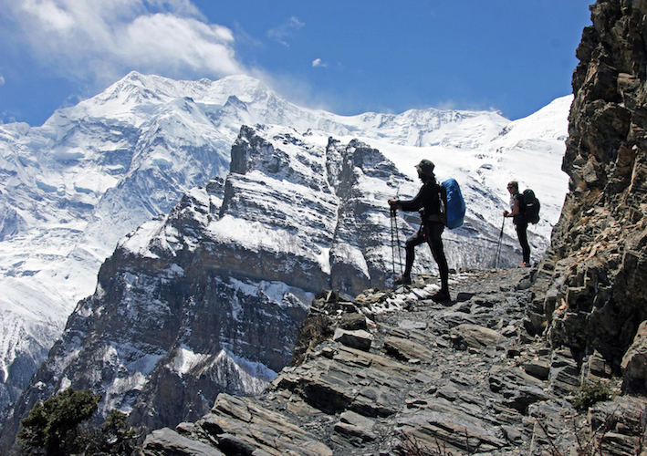
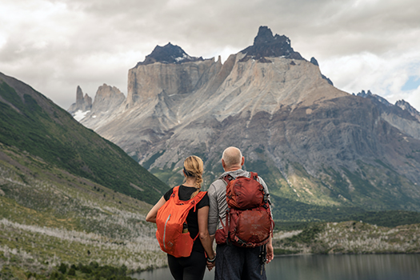

This three part series explores the farm-to-table culinary program at UnCruise Adventures. When I met Corporate Chef Sam Spiva, and learned about his approach to sourcing sustainable products from local vendors, I knew we had some stories to tell. From the farmers to the fishermen to the chefs in the galley, this series highlights the people and relationships behind every menu, and shares the stories that go into each plate of food.
Co-produced with Sam Spiva, and shot together with Ryan Villasanti. Additional footage provided by JMDM Creative and Steer Films.
be _____ with us
Writer | Editor
This campaign for UnCruise Adventures invites people to feel inspired by the transformative nature of travel. What will you learn about yourself on your next adventure? Who will you share your journey with, and what stories will you have to tell when you come back? We created a series of short pieces before launching the main video, inviting people to join UnCruise Adventures and be _____ with us.
Shot together with Ryan Villasanti. Additional content provided by Steer Films, Pioneer Studios, and JMDM Creative.
PBS NewsHour
Production Assistant | Videographer

National Census Reveals Scars of Bosnia's Past
Produced by The Bureau of International Reporting.
Sticky Rice Travel
Director | Editor
UnCruise Adventures
Producer | Director | Editor
P H O T O G R A P H Y






© 2020 jessecoconut